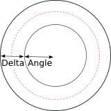

| On this page |
Light Objects are those objects which cast light onto other objects in a scene. With the light parameters you can control the color, shadows, atmosphere and render quality of objects lit by the light. Lights can also be viewed through and used as cameras (Viewport > Camera menu).
Parameters
Transform
Transform Order
The left menu chooses the order in which transforms are applied (for example, scale, then rotate, then translate). This can change the position and orientation of the object, in the same way that going a block and turning east takes you to a different place than turning east and then going a block.
The right menu chooses the order in which to rotate around the X, Y, and Z axes. Certain orders can make character joint transforms easier to use, depending on the character.
Translate
Translation along XYZ axes.
Rotate
Degrees rotation about XYZ axes.
Modify Pre-Transform
This menu contains options for manipulating the pre-transform values. The pre-transform is an internal transform that is applied prior to the regular transform parameters. This allows you to change the frame of reference for the translate, rotate, scale parameter values below without changing the overall transform.
Clean Transform
This reverts the translate, rotate, scale parameters to their default values while maintaining the same overall transform.
Clean Translates
This sets the translate parameter to (0, 0, 0) while maintaining the same overall transform.
Clean Rotates
This sets the rotate parameter to (0, 0, 0) while maintaining the same overall transform.
Clean Scales
This sets the scale parameter to (1, 1, 1) while maintaining the same overall transform.
Extract Pre-transform
This removes the pre-transform by setting the translate, rotate, and scale parameters in order to maintain the same overall transform. Note that if there were shears in the pre-transform, it can not be completely removed.
Reset Pre-transform
This completely removes the pre-transform without changing any parameters. This will change the overall transform of the object if there are any non-default values in the translate, rotate, and scale parameters.
Keep Position When Parenting
When the object is re-parented, maintain its current world position by changing the object’s transform parameters.
Child Compensation
When the object is being transformed, maintain the current world transforms of its children by changing their transform parameters.
Enable Constraints
Enable Constraints Network on the object.
Constraints
Path to a CHOP Constraints Network. See also creating constraints.
Tip
You can you use the Constraints drop down button to activate one of the Constraints Shelf Tool. If you do so, the first pick session is filled automatically by nodes selected in the parameter panel.
Note
Lookat and Follow Path parameters on object nodes are deprecated in favor of  Look At and
Look At and  Follow Path constraints.
The parameters are only hidden for now and you can set their visibitily if you do edit the node’s parameter interface.
Follow Path constraints.
The parameters are only hidden for now and you can set their visibitily if you do edit the node’s parameter interface.
Viewing Options
Display
Whether or not this object is displayed in the viewport and rendered. Turn on the checkbox to have Houdini use this parameter, then set the value to 0 to hide the object in the viewport and not render it, or 1 to show and render the object. If the checkbox is off, Houdini ignores the value.
Icon scale
Scales the viewport geometry. This parameter is only for display purposes.
Cache Object Transform
Caches object transforms once Houdini calculates them. This is
especially useful for objects whose world space position is
expensive to calculate (such as  Sticky objects),
and objects at the end of long parenting chains (such as
Sticky objects),
and objects at the end of long parenting chains (such as
 Bones). This option is turned on by default for Sticky and
Bone objects.
Bones). This option is turned on by default for Sticky and
Bone objects.
See the OBJ Caching section of the Houdini Preferences window for how to control the size of the object transform cache.
Viewport Selecting Enabled
Object is capable of being picked in the viewport.
Select Script
Script to run when the object is picked in the viewport. See select scripts .
Light
Enable
Turning this toggle off is equivalent to setting the light intensity to 0.
Enable In Viewport
Turning this off removes the light from consideration in the viewport. This is useful for lights which only make sense at render time.
Type
The type of light. See the description of light types.
Point
A light that emits light from a specific point in space defined by the transform for the light.
Line
A line light which is from (-0.5, 0, 0) to (0.5, 0, 0) in the space of the light.
Grid
A rectangular grid from (-0.5, -0.5, 0) to (0.5, 0.5, 0) in the space of the light.
Disk
A disk shaped light. The disk is a unit circle in the XY plane in the space of the light.
Sphere
A sphere shaped light. The sphere is a unit sphere in the space of the light.
Tube
A tube shaped light. The first parameter of Area Size controls the height of the tube and the second controls the radius.
Geometry
Use the object specified by the Geometry Object parameter to define the shape of the area light.
Distant
A directional light source infinitely far from the scene. Distant light sources cast sharp shadows, and so are candidates for the use of depth map shadows.
Sun
A finite sized (non-point) directional light source infinitely far from the scene. Sun lights are similar to distant lights with the exception that they produce a penumbra - similar to the actual sun.
Color
The color of the light source.
Intensity
The linear intensity of the light source. If the intensity is 0, the light is disabled. In this case, the light will only be sent to the renderer if the object is included in the Force Lights parameter of the output driver.
Exposure
Light intensity as a power of 2. Increasing the value by 1 will double the energy emitted by the light source. A value of 0 produces an intensity of 1 at the source, -1 produces 0.5. The result of this is multiplied with the Intensity parameter.
Note
This value will be automatically set based on what is visible when the light is first placed in the scene.
Contributions
Provides detailed control over which shading components the light affects. To disable contribution to a named component, add an entry to the contribution list, specify the component name, and disable the toggle. Light contributions can also be used to control whether the light contributes to direct or indirect lighting. To disable contributions to direct lighting, use the "direct" component label and to disable indirect lighting, use the "indirect" component label.
Categories
The space or comma separated list of categories to which this object belongs.
Currently not supported for per-primitive material assignment (material SOP).
Sampling Quality
The sampling quality for area light sources and sun lights. Depending on the area of the light source, more samples might be needed to provide smoother illumination. Sampling quality is specified relative to the ray sampling parameters on the mantra ROP - so if the ray samples on the ROP are set to 4 and the sampling quality is set to 4, 16 samples will be used for the light source.
Render Light Geometry
Causes the light source geometry to appear as an object or background in the render, as if an extra geometry object were created with the same geometry as the light source. Render light geometry can be used to identify the actual brightness of area light sources when debugging the intensity of specular highlights, and to aid in the placement of light sources in IPR renders.
Spot Light Options

Spot lights change the illumination of a light source based on the angle with the light source viewing direction. In the diagram above, the area within the center ring receives full illumination. The light falls off between the inner ring (defined by the Cone angle) and the outer ring (defined by the Cone delta). The dashed line represents where illumination is half as bright as within the cone angle. The Cone rolloff parameter moves this line between the center and outer rings.
Enable Spot Light
Enables spot or cone light falloff. Spot light can be applied to any light type including area lights.
Use cone angle for field of view
When rendering shadow maps or using a projection map with a spot light, the Cone Angle will be used to define the field of view. However, to be able to get better shadows on a certain section of geometry, it is useful to be able to de-couple the field of view control. Toggling this parameter off will enable the Projection Angle or Orthographic Width parameters.
Projection Angle
The viewing angle used for depth map generation when perspective view is used.
Cone Angle
The size of the spotlight’s beam. Enter the number of degrees wide the spotlight’s cone should be. You can only change this parameter if you are using a cone light.
Cone Delta
Number of degrees of penumbra for spotlights.
Cone Rolloff
Shape exponent of penumbra (larger = sharper).
Projection Map
Specifies the image that gets projected. The viewing angle of the light will determine the area of projection.
Near Clipping
Distance to the near clipping plane.
Far Clipping
Distance to the far clipping plane.
Environment/IES Map
This parameter sets an environment map or IES file to be used to tint illumination based on the direction in which the light is cast. Environment maps can be used with all light types including point lights.
Environment Space
The space to use for environment map lookups. By default, the light’s space will be used so that transforming the light source will also transform the environment map.
Environment Null
When Environment Space is set to Use Environment Null, this parameter can be used to configure the transform object to use for orienting the environment map.
Map Blur Angle
Specifies the angle over which the environment map should be blurred.
Map Angle Scale
Scales the environment map angle, relative to the light axis. Values larger than 1 will expand the map while values less than 1 will compress the map into a smaller angle. This value is especially useful with IES maps, in which case it can be used to increase or decrease the built-in cone angle without changing the map file.
Area Light Options
Area Size
The size of the area light source. It is possible to define a different light scale in the x and y directions - for example, to produce a rectangular light.
Note
When using the Tube Light, the first parameter controls the height of the tube and the second controls the radius.
Normalize Light Intensity to Area
Scales the light source intensity to take into account the visible area of the light. When enabled, increasing the size of an area light will not have any effect on the total amount of illumination produced by the light source, so that the size of the light can be adjusted only to change the softness of shadows. When disabled, increasing the size of an area light will cause the total amount of illumination produced by the light to increase proportionally with area. When rendering physically correct scenes, it is often useful to disable this option and use Physically Correct attenuation since this can produce more predictable physically accurate lighting results.
Single Sided
Causes the light source to emit light only in the direction of the surface normal.
Reverse Emission Direction
When rendering a single sided light, reverses the direction of emission so that it is in the reverse normal direction.
Self Shadow
Controls whether the area light source casts shadows on itself. If the light geometry exists elsewhere in the scene, you can disable this toggle to avoid computing the shadows twice.
Texture Map
Specifies a texture map to be used to tint illumination based on the uv coordinate on the geometry.
Enable Edge Falloff
Enables a simple edge falloff calculation to soften the edges of primitive area light types.
Edge Width
The percentage of the light size that should be treated as the edge of the light source for falloff calculation.
Edge Rolloff
Shape exponent for edge rolloff (larger = sharper).
Geometry Object
Reference to a geometry object to be used for Geometry area light types. The light source will take on the appearance of the referenced geometry. Normally you should turn off the display of the originating geometry object to avoid self-shadowing artifacts.
Tip
For the best performance and quality when rendering geometry area lights, evaluate your geometry against the following checklist.
-
Use the lowest resolution geometry that is a good approximation for the shape of the desired illuminating surface. Higher resolution geometry or subdivision surfaces will take longer to render and may introduce additional sampling noise.
-
Use open surfaces rather than closed meshes, and delete primitives that are known to contribute no illumination to the scene. Mantra may perform lighting computations for hidden faces - so if you can manually remove these primitives rendering performance will improve.
Transform Into This Object
Enabling this parameter causes the transform on this light object to be ignored, which will cause the geometry to be placed in the same location in space as the original object.
Point Cloud Options
The point cloud options on the geometry light can be used to accelerate rendering of complex geometry light shapes including emissive volumes. It works by first generating a point cloud using mantra’s micropolygon renderer, and then samples this point cloud during the render to find the most important nearby points that illuminate a shading point. Illumination is computed from the Ce (Emission) export from standard surface shaders - so the point cloud light is an alternative to using extra diffuse or reflection bounces to capture this lighting.
Tip
For simple geometry lights or basic area lights, using a point cloud can actually slow down the render or produce noisier results. Point clouds are best suited for complex geometry or volumes where emission varies widely across the model.
Enable Point Cloud
Enables the point cloud sampler.
Point Samples
The number of aggregate points to search for during shading. Points are queried using the pcopenlod() interface in VEX, which clusters points together based on their effect on the current shading position. Using a larger point count will cause mantra to use more detail from the point cloud, while smaller sample counts will tend to use averaged results. Using a point count of 1 will approximate the entire point cloud with a single point.
Even with a low Point Samples, you will still see soft shadows in the
render - since mantra uses sampling to choose a concrete sub-point for
each aggregate point sample.
To set the point samples for optimal performance, gradually decrease the number of samples until there is a noticeable degredation in the rendered result.
Point Cloud File
The file to store the points. This should be a .pc file. The default value of "temp:$OS.pc" stores the file in temporary memory that is discarded when mantra exits, so if you wish to reuse a point cloud between renders it is necessary to explicitly specify a file path in this parameter.
Tip
Point clouds can be inspected using the gplay utility or by loading them directly into houdini using the file SOP. Both these approaches will automatically convert the point cloud to a geometry file.
Auto-generate Point Cloud
Enables automatic generation of a point cloud using the micropolygon PBR rendering engine. Point cloud generation executes the micropolygon renderer without generating an image, and will gradually build up a point cloud using a shader that writes points directly to the file. The data stored in the point cloud includes the emission (Ce) as well as point area/volume information and position (P). Point cloud generation will proceed before the main render begins.
Tip
Use the IPR Viewer pane to see a progress bar for point cloud generation. When using IPR with point clouds, be sure to press the Render button if you need to regenerate point clouds - point clouds are treated the same way as depth maps in IPR, and so must be manually regenerated when they are out of date.
Shading Quality
Controls the density of points stored in the point cloud. This overrides the Shading Quality Multiplier parameter on the ROP for point cloud generation.
Override Dicing Camera
When enabled, the Dicing Camera parameter specifies the viewing camera to use for point cloud generation. If some of the illuminating geometry is outside the viewing region for the rendering camera, it is desirable to use a separate camera for point cloud generation so that all illumination is accounted for.
Dicing Camera
The camera object to use for point cloud generation. A different resolution and view can be configured on this camera to optimize point cloud generation.
Distant Light Options
Orthographic Width
Controls the field of view for depth map generation from distant light sources.
Sun Angle
The angle for the Sun light type. Larger angles will produce blurrier shadows.
Attenuation Options
Attenuation
Controls how light decreases in intensity the farther you get from the light source.
Note
When using area light sources, it is often useful to set the attenuation type to Physically Correct as opposed to Half Distance Attenuation or No Attenuation. Area lights are often placed close to the scene, so using non-physical attenuation can produce unrealistic results.
No Attenuation
The light is the same intensity, regardless of how far away a surface is from the light.
Half Distance Attenuation
You specify a distance at which the light attains half the intensity that it is at the origin of the light. This is modeled mathematically as
Cl = H / ( H + D )
where H is the half distance and D is the distance from the light source. When D is 0, we end up with H/H which is 1. When D is equal to H (the half-distance) the intensity is H/(H+H), which is half the intensity.
The light is never fully extinguished no matter the distance from the source.
Physically Correct Attenuation
In reality, light falls off based on the the inverse square law. This attenuation mode implements this type of fall off. Mathematically, the intensity is modeled by
Cl = 1 / (D * D)
Half Distance
The distance from the light at which Half Distance Attenuation produces half the light intensity.
Attenuation Start
Minimum light distance to be used for attenuation of point lights and line area lights. Point light illumination on diffuse surfaces will be constant within this radius.
Active Radius
The radius of effect for the light source. When rendering with many light sources, reducing the active radius can speed up renders by avoiding lighting and shadowing calculations for light sources that are outside this radius.
Use Attenuation Ramp Multiplier
Enables a ramp control to directly adjust the attenuation at different distances. The ramp will be multiplied by the existing light intensity without the ramp to produce the final light intensity at a given distance.
Ramp Start Distance
The distance that corresponds to the first entry in the attenuation ramp. Distances smaller than the ramp start distance will be clamped - that is they will share the initial value in the ramp.
Ramp End Distance
The distance that corresponds to the last entry in the attenuation ramp. Distances larger than the ramp end distance will be clamped - that is they will share the final value in the ramp. You can set the final entry in the attenuation ramp to black to ensure that the light fades out past this distance.
Attenuation Ramp Multiplier
Linear ramp of colors to be multiplied by the light intensity at given distances.
Shadow
Shadow Type
None
No shadows will be cast by this light.
Ray-Traced Shadows
Ray-tracing will be used to compute shadows from this light source.
Depth Map Shadows
Shadows will be computed using a depth map. When transparent shadows are turned on, deep shadow maps will be used. Otherwise, simple z-depth shadow maps will be used.
Shadow Mask
A mask of objects which will be considered occluders for the light source. When ray-traced shadows are used, only these objects will be intersected by shadow rays. When depth map shadows are used, only these objects will appear in the depth map.
Note
It is possible to use categories by adding the shadowcategories rendering parameter.
Shadow Intensity
A scale on how much light is blocked by occluders. By decreasing the shadow intensity, the occluders will not block all the light, allowing some illumination through.
Shadow Color
Specifies a color that should be used in place of black for fully opaque shadows. This value is combined with the Shadow Intensity to produce the final shadow value.
Transparent Shadows
When this option is turned on, the surface shader of occluders will be evaluated to determine the opacity. Turning this option on will cause deep shadow maps to be used when shadowing using Depth Map Shadows.
Depth Map Options
These options only apply to depth map shadows.
Deep shadows are produced by default when rendering Depth Map Shadows with Transparent Shadows enabled. Their advantage include:
-
Shadows of transparent objects, including volumetric objects.
-
Motion-blurred shadows.
-
Better shadow anti-aliasing.
Deep shadow maps store the opacity of any translucent objects the light ray passes through as well as the depth of the final opaque surface.
See the discussion for the Shadow Type parameter on the Shadow tab for additional information on deep shadows.
Note
Deep shadows use significantly more disk space than plain depth maps.
Shadow Bias
The bias when computing shadows from this light source. This is a small distance. If occluders are within this distance, they will not be considered shadowers. This is to prevent self-shadowing artifacts due to the limited resolution of depth map shadows.
Increase the bias value to obtain a nice shadow when working with a large scene. Try a shadow bias 5-10% of the scene scale to start.
Shadow Quality
Adjust the quality of lookups when evaluating standard shadow maps or blurred shadows.
Shadow Softness
A blur on the shadow map when using depth mapped shadows, specified relative to the size of a micropolygon when rendering with Micropolygon Rendering.
Shadow Blur
Controls the fraction of the shadow map image to blur when rendering.
This parameter can be used to blur the map disregarding the surface derivatives, which are taken into account but the Shadow Softness parameter.
Auto-generate Shadow Map
Generate a shadow map from this light source during the next render.
Shadow Map
The path to the shadow map.
Resolution
The resolution of the shadow map. It is a good idea to keep the resolution the same in X and Y.
Pixel Samples
The number of pixel samples to be used when rendering shadow maps. This is more important when deep shadow maps (transparent shadows) are being used.
Depth Map Motion Blur
When rendering deep shadow maps, it is possible to capture motion blur in the shadow map. If motion blurred shadows are desired, it’s important to turn on Transparent Shadows.
Material
Material
Allows a specific shader to override the automatically generated shader for area light rendering. If you use a surface shader to shade a light source, you should verify that the shader does not compute illumination itself. Materials assigned to light sources should only emit light - not absorb light themselves.
For example, the VEX Area Light shader can be used. This is also the shader that is used by default when rendering a light without a material assigned.
Locals
IPT
This is typically -1. However, if the object is performing point instancing, then this variable will be set to the point number of the template geometry. For the IPT variable to be active, the Point Instancing parameter must be turned on in this object.
Note
This variable is deprecated. Use the instancepoint expression function instead.
Examples
This example highlights several features:
-
Geometry area lights
-
Attenuation ramp controls
-
Surface model specular layers
The example consists of a geometry light based on a wireframe of nurbs curves. The attenuation on the light uses colored keys, allowing for different light colors to be produced at different distances from the light. The ground plane shader uses a surface model with two specular components - one wide component and another narrower glossy component to give a multi-layered appearance.
TransparentShadows Example for Light object node
This example shows how to configure transparent shadows with deep shadow maps. The scene includes a transparent grid which casts a shadow on the scene. The renderer used is micropolygon rendering.